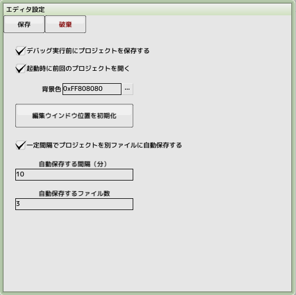

■元のページへ戻る
■元のページへ戻る

- デバッグ実行前にプロジェクトを保存する
実行前に自動的に上書き保存されます
- 背景色
スプライト編集や背景編集でイメージプレビューの背景色になります
- 編集ウインドウ位置を初期化
画面外に編集ウインドウが行ってしまった時に実行してください
- 自動保存
一定時間でプロジェクトを別名で保存します。間隔と保存数を指定します
- エクスポート
全パーツデータをディスク上に書き出します
ドラッグ＆ドロップでプロジェクトへインポートできます
その際、パーツ同士のリンク情報は破壊されます
■ページ上部へ戻る